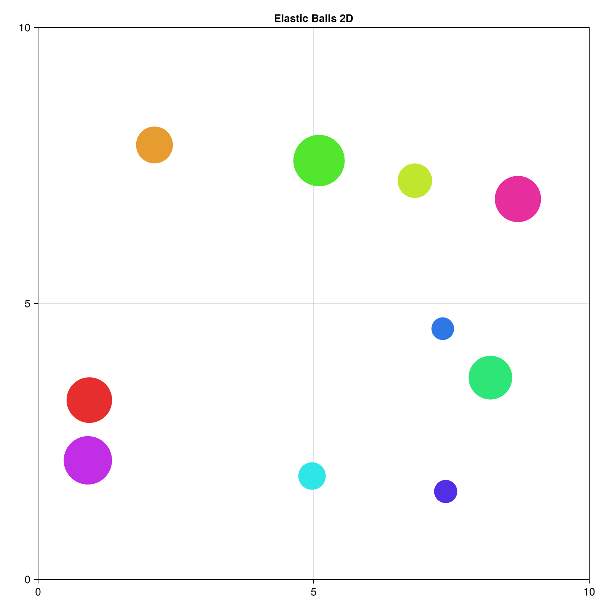

Software installation for Agentic coding
この資料は CompPhysHack 2026 のために作成された．
人間は自然言語で作りたいものを指示し AI Agent はソースコードを生成・コマンドの実行を行う．このような AI を用いて開発を効率よく進める手法を AI-driven 開発と呼ぶ. Vibe coding, Agentic engineering, Agentic coding などのような言い方も存在する．
試すのは非常に簡単である．好きなプラットフォーマが提供している AI Agent をインストールし下記のプロンプトを試すとよい．
For Julia users:
I want to create a Julia package for simulating and visualizing elastic collisions of multiple balls in 2D space.For Rust users:
I want to create a Rust crate for simulating and visualizing elastic collisions of multiple balls in 2D space.ここでは英語によるプロンプトを用いたが，日本語など，好きな自然言語で指示ができる．例えばこのような出力が期待できる．ソースコード生成には Cursor が提供している Composer 1.5 モデルを用いた．

どのツールを使うべきか
- AI Agent は常に進化しているので答えはない．良いスタート地点はどのアカウントを持っているかによる．または近くの同僚・友達に聞いてみるとよい．
- ChatGPT を契約していれば Codex, GPT-5.3-Codex を使ってみる
- Claude を契約していれば Claude Code: Opus-4.6 を使ってみる
- とにかく無料で使いたい
- どのサービスも使用上限が存在する. すべてはお金次第. CompPhysHack 2026 参加者が全日程を楽しむには何かしらの有料プランに加入する必要があるだろう．
この資料を作成している筆者の場合，下記のような構成である．
- Claude Code MAX
$200/$100: Opus-4.6- Coding を AI に任せている
- ChatGPT Plus plan
$20: Codex: GPT-5.3- Claude Code とは別の視点が欲しい
- Cursor Pro plan
$20: 日常のエディタとして Composer 1.5- ソースコードの補完が得意. 統合ターミナルでのエラー出力を AI エージェントにシームレスに渡せるのがユーザ体験が良い
Command Line Interface (CLI) ツールの導入
CompPhysHack 2026 の参加者はある程度ソフトウェア開発経験があることを想定している．ここでは CLI ツールを経由して各種 AI エージェントをインストールしよう．
npm コマンドのインストール
npm は Node.js のためのパッケージマネージャである. Node.js は JavaScript ランタイムである. Codex CLI, Gemini CLI をインストールするにはこの手順が必要である．
- Download Node.js の指示に従うこと．
以下は各種 CLI ツールの導入について書いているが，全てを導入する必要はない．
Codex CLI
- https://developers.openai.com/codex/cli/
$ npm i -g @openai/codex
$ codex利用するには ChatGPT を契約しているアカウントが必要である．
Gemini CLI
$ npm install -g @google/gemini-cli
$ geminiSee https://github.com/google-gemini/gemini-cli to learn more.
利用するには Google アカウントが必要である．
Claude Code
macOS, Linux, WSL:
$ curl -fsSL https://claude.ai/install.sh | bash
$ claudeWindows PowerShell:
PS> irm https://claude.ai/install.ps1 | iexCopilot CLI
$ npm install -g @github/copilot
$ copilotSee https://github.com/github/copilot-cli to learn more.
AI 付属統合開発環境の導入
VS Code または派生の Cursor, Google Antigravity を導入する．全て入れる必要はない．
VS Code
下記のリンク先の指示に従う
Cursor
下記のリンク先の指示に従う
また cursor-agent で Cursor を CLI ツールとして利用できる．
Google Antigravity
下記リンク先の指示に従う
Software Installation
Julia
Julia は科学技術計算が得意な汎用プログラミング言語である．
Installing Julia の指示に従う.
macOS or Linux:
$ curl -fsSL https://install.julialang.org | shWindows:
PS> winget install --name Julia --id 9NJNWW8PVKMN -e -s msstoreRust
Rust はシステムプログラミング向けに開発されているが，科学技術計算でも注目されている．Install Rust の指示に従う．
macOS or Linux:
$ curl --proto '=https' --tlsv1.2 -sSf https://sh.rustup.rs | shSee this instructions if you are using Windows.
上記のコマンドで cargo, rustc のようなコマンドが使えるようになる．動作確認は次のとおり．
$ cargo new hello-world
$ cd hello-world
$ cargo run --release
cargo run --release
Compiling hello-world v0.1.0 (path/to/your-workspace/hello-world)
Finished `release` profile [optimized] target(s) in 1.38s
Running `target/release/hello-world`
Hello, world!Python
Python はスクリプト言語として優秀であるが，パッケージマネージャが乱立しており多くの混乱をコミュニティに招いている．uv はそれに終止符を打つであろう．私はそのように願っている．uv は Python の高速なパッケージマネージャである．uv は Rust で実装されている．
Installing uv の指示に従う．
macOS or Linux:
$ curl -LsSf https://astral.sh/uv/install.sh | sh動作確認
$ mkdir path/to/your-workspace
$ cd path/to/your-workspace
$ uv init
$ uv run python main.pyDocker
Claude Code や Codex はユーザからの許可をバイパスするオプションを備えている．たとえば --allow-dangerously-skip-permissions, --yolo といったオプションだ．このようなオプションは便利だが rm -rf / のような危険なコマンドの実行も許すことになる．このような状況を防ぐためにサンドボックス環境を使うのが望ましい．たとえば Docker が提供するコンテナはマウントするファイルを制限することで制限された範囲で AI Agent を行動させることが可能である．
OS に応じてインストールすること:
動作確認は下記のコマンドでできる:
$ docker run --rm hello-worldDev Containers
Docker を使って環境構築するには Dockerfile を作る必要がある．何もないところから構築するのは大変である．そこで Devcontainer が提供する Development Container Features を利用することで，Feature と呼ばれる自己完結した設定をブロックとして組み立てて環境構築することにする．これにより Docker コンテナ内部で Julia, Python, Rust などを自由に使うことができる．
Dev Container CLI に従って下記のようにインストールする．
$ npm install -g @devcontainers/cli下記のコマンドで確かめることができる.
$ git clone https://github.com/microsoft/vscode-remote-try-rust
$ cd vscode-remote-try-rust
$ devcontainer build
$ devcontainer up --workspace-folder ./
$ devcontainer exec --workspace-folder ./ bash
vscode ➜ /workspaces/vscode-remote-try-rust (main) $ cargo run
Compiling hello_remote_world v0.1.0 (/workspaces/vscode-remote-try-rust)
Finished `dev` profile [unoptimized + debuginfo] target(s) in 0.45s
Running `target/debug/hello_remote_world`
Hello, VS Code Remote - Containers!Software installation for Agentic coding
この資料は CompPhysHack 2026 のために作成された．
人間は自然言語で作りたいものを指示し AI Agent はソースコードを生成・コマンドの実行を行う．このような AI を用いて開発を効率よく進める手法を AI-driven 開発と呼ぶ. Vibe coding, Agentic engineering, Agentic coding などのような言い方も存在する．
試すのは非常に簡単である．好きなプラットフォーマが提供している AI Agent をインストールし下記のプロンプトを試すとよい．
For Julia users:
I want to create a Julia package for simulating and visualizing elastic collisions of multiple balls in 2D space.For Rust users:
I want to create a Rust crate for simulating and visualizing elastic collisions of multiple balls in 2D space.ここでは英語によるプロンプトを用いたが，日本語など，好きな自然言語で指示ができる．例えばこのような出力が期待できる．ソースコード生成には Cursor が提供している Composer 1.5 モデルを用いた．
どのツールを使うべきか
- AI Agent は常に進化しているので答えはない．良いスタート地点はどのアカウントを持っているかによる．または近くの同僚・友達に聞いてみるとよい．
- ChatGPT を契約していれば Codex, GPT-5.3-Codex を使ってみる
- Claude を契約していれば Claude Code: Opus-4.6 を使ってみる
- とにかく無料で使いたい
- どのサービスも使用上限が存在する. すべてはお金次第. CompPhysHack 2026 参加者が全日程を楽しむには何かしらの有料プランに加入する必要があるだろう．
この資料を作成している筆者の場合，下記のような構成である．
- Claude Code MAX
$200/$100: Opus-4.6- Coding を AI に任せている
- ChatGPT Plus plan
$20: Codex: GPT-5.3- Claude Code とは別の視点が欲しい
- Cursor Pro plan
$20: 日常のエディタとして Composer 1.5- ソースコードの補完が得意. 統合ターミナルでのエラー出力を AI エージェントにシームレスに渡せるのがユーザ体験が良い
Command Line Interface (CLI) ツールの導入
CompPhysHack 2026 の参加者はある程度ソフトウェア開発経験があることを想定している．ここでは CLI ツールを経由して各種 AI エージェントをインストールしよう．
npm コマンドのインストール
npm は Node.js のためのパッケージマネージャである. Node.js は JavaScript ランタイムである. Codex CLI, Gemini CLI をインストールするにはこの手順が必要である．
- Download Node.js の指示に従うこと．
以下は各種 CLI ツールの導入について書いているが，全てを導入する必要はない．
Codex CLI
- https://developers.openai.com/codex/cli/
$ npm i -g @openai/codex
$ codex利用するには ChatGPT を契約しているアカウントが必要である．
Gemini CLI
$ npm install -g @google/gemini-cli
$ geminiSee https://github.com/google-gemini/gemini-cli to learn more.
利用するには Google アカウントが必要である．
Claude Code
macOS, Linux, WSL:
$ curl -fsSL https://claude.ai/install.sh | bash
$ claudeWindows PowerShell:
PS> irm https://claude.ai/install.ps1 | iexCopilot CLI
$ npm install -g @github/copilot
$ copilotSee https://github.com/github/copilot-cli to learn more.
AI 付属統合開発環境の導入
VS Code または派生の Cursor, Google Antigravity を導入する．全て入れる必要はない．
VS Code
下記のリンク先の指示に従う
Cursor
下記のリンク先の指示に従う
また cursor-agent で Cursor を CLI ツールとして利用できる．
Google Antigravity
下記リンク先の指示に従う
Software Installation
ここでは現代的な一般的なソフトウェア開発(数値計算もこのカテゴリの中に入る)で有用な CLI ツールを導入する．
GitHub CLI (gh)
多くの AI エージェントは gh コマンドを経由して GitHub にある Issue の作成，プルリクエストの作成を行う．これにより多くの面倒な作業を自動化することができる．
インストールするには https://cli.github.com/ にある説明を読むこと
macOS
% brew install ghLinux ユーザは Installing gh on Linux and BSD を参考に導入すること．
Windows ユーザは Installing gh on Windows を参考に導入すること．
Julia (julia)
Julia は科学技術計算が得意な汎用プログラミング言語である．
Installing Julia の指示に従う.
macOS or Linux:
$ curl -fsSL https://install.julialang.org | shWindows:
PS> winget install --name Julia --id 9NJNWW8PVKMN -e -s msstoreRust(cargo, rustc)
Rust はシステムプログラミング向けに開発されているが，科学技術計算でも注目されている．Install Rust の指示に従う．
macOS or Linux:
$ curl --proto '=https' --tlsv1.2 -sSf https://sh.rustup.rs | shSee this instructions if you are using Windows.
上記のコマンドで cargo, rustc のようなコマンドが使えるようになる．動作確認は次のとおり．
$ cargo new hello-world
$ cd hello-world
$ cargo run --release
cargo run --release
Compiling hello-world v0.1.0 (path/to/your-workspace/hello-world)
Finished `release` profile [optimized] target(s) in 1.38s
Running `target/release/hello-world`
Hello, world!Python (uv)
Python はスクリプト言語として優秀であるが，パッケージマネージャが乱立しており多くの混乱をコミュニティに招いている．uv はそれに終止符を打つであろう．私はそのように願っている．uv は Python の高速なパッケージマネージャである．uv は Rust で実装されている．
Installing uv の指示に従う．
macOS or Linux:
$ curl -LsSf https://astral.sh/uv/install.sh | sh動作確認
$ mkdir path/to/your-workspace
$ cd path/to/your-workspace
$ uv init
$ uv run python main.pyDocker (docker)
Claude Code や Codex はユーザからの許可をバイパスするオプションを備えている．たとえば --allow-dangerously-skip-permissions, --yolo といったオプションだ．このようなオプションは便利だが rm -rf / のような危険なコマンドの実行も許すことになる．このような状況を防ぐためにサンドボックス環境を使うのが望ましい．たとえば Docker が提供するコンテナはマウントするファイルを制限することで制限された範囲で AI Agent を行動させることが可能である．
OS に応じてインストールすること:
動作確認は下記のコマンドでできる:
$ docker run --rm hello-worldDev Containers (devcontainer)
Docker を使って環境構築するには Dockerfile を作る必要がある．何もないところから構築するのは大変である．そこで Devcontainer が提供する Development Container Features を利用することで，Feature と呼ばれる自己完結した設定をブロックとして組み立てて環境構築することにする．これにより Docker コンテナ内部で Julia, Python, Rust などを自由に使うことができる．
Dev Container CLI に従って下記のようにインストールする．
$ npm install -g @devcontainers/cli下記のコマンドで確かめることができる.
$ git clone https://github.com/microsoft/vscode-remote-try-rust
$ cd vscode-remote-try-rust
$ devcontainer build
$ devcontainer up --workspace-folder ./
$ devcontainer exec --workspace-folder ./ bash
vscode ➜ /workspaces/vscode-remote-try-rust (main) $ cargo run
Compiling hello_remote_world v0.1.0 (/workspaces/vscode-remote-try-rust)
Finished `dev` profile [unoptimized + debuginfo] target(s) in 0.45s
Running `target/debug/hello_remote_world`
Hello, VS Code Remote - Containers!Software Installation (Optional)
下記はこの資料の作成者が使っているコマンドをインストールするための手順である．読まなくてよい．
tig
Text-mode interface for git
% brew install tightop
リッチな top コマンド．CPU 利用率を目視で計測するために用いている．
% brew install htoprg command
Codex ユーザは入れてもよいかもしれない．
% brew install ripgrepquarto
この資料をローカルで見たい場合には必要
See Welcome to Quarto to learn more.